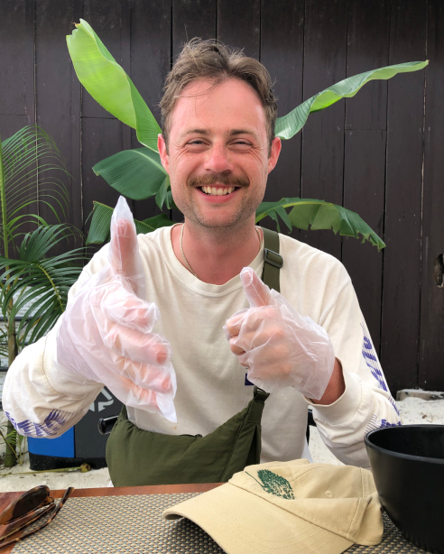

Hey, I'm Matt
Nice to meet you 🤝
I’m a software developer and designer living in Melbourne.
I'm currently building WhyHive, an easy-to-use data analysis app designed for the everyday person.
WhyHive is like Canva for data analysis.
I also co-founded Bloody Good Bins, a social enterprise that sold colourful sanitary bins to get people talking about periods and menstrual health. We also donated 50% of profits to charity.
Bloody Good Bins was the Who Gives A Crap of sanitary bins.